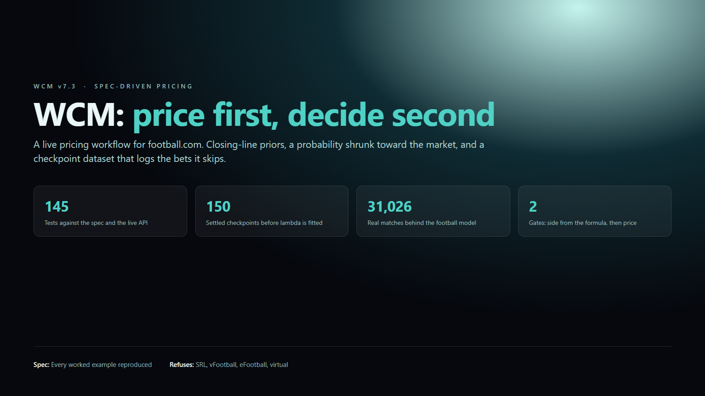

What it is
WCM is a live pricing model for two markets on football.com: basketball full-time totals and football half totals. It is built from a written specification, wcm.py implements WCM v7.3, and the test suite asserts every worked example printed in that spec, so the code and the document cannot quietly drift apart.
It is also the project that taught me the most about restraint, and that story is worth telling honestly rather than hiding.
The two-phase prior
The spec refuses to guess a prior, which forces a workflow most people skip. Basketball needs the closing total; football needs the de-vigged P(over 2.5). Both must be read before kick-off.
A live line cannot substitute for either. Using the current live number as the prior double-counts the information the model is meant to update from, the model would be "predicting" a line that already contains the score. So every match is worked in two passes:
- Phase A: capture the prior. Open the event page in the final minutes before kick-off and read the closing line. A price read hours early is an early price, not the closing one, and the card is only as good as that number.
- Phase B: monitor live. At checkpoints during the match, the model prices the remaining total from score, clock and the prior, then compares that against the live quote.
Shrinking toward the market on purpose
The final probability is not the model's own opinion. It is the model blended with the book's de-vigged probability:
p* = p_mkt + λ (p_model - p_mkt) with λ = 0.5That half-weight is not humility theatre. It is a starting assumption that has to be earned away. After 150 settled checkpoints, λ can be fitted from data instead of assumed, which turns the question the spec calls unanswerable, "does the fair value actually beat the live line?", into a measurement rather than an argument.
The dataset is the real product
Every checkpoint the model evaluates is written to data/wcm_dataset.csv, whether or not it became a bet: the live line, the book's implied probability, the model's probability, the shrunk probability, the decision, and, once the match resolves, the actual result.
Most rows are PASS. That is the point. Section 7 of the spec requires logging the checkpoints you skip, because a dataset of placed bets only tells you how the bankroll moved, while a dataset of every checkpoint tells you whether the probability is honest.
Refusing the fixtures that cannot be modelled
The football model was fitted on 31,026 real matches. A Simulated Reality League outcome is generated by the bookmaker, so there is nothing to model, the model has no edge because there is no underlying process. So is_simulated() refuses SRL, vFootball, eFootball, Esoccer and anything with "virtual" in the competition name, and it is enforced on every path that could price or log a fixture. On one night, six of the ten covered football fixtures were SRL. All six were refused.
The night it lost, and what was actually wrong
On 17 November 2026 the project lost NGN 495, the whole allocation. The interesting part is that the formula was not the problem.
The scanner priced both sides of every rung and let the biggest gap between model and market win. When the live ladder sits above fair value, every rung shows a fat UNDER gap, so it emitted UNDER regardless of what the model thought. On three of the four bets booked that night, the tool took the opposite side to the formula's own verdict, and all three of those games finished over. The formula's direction was right on three of four.
There was a second failure behind it: a consistency rule that was supposed to require more than one snapshot before acting had never been wired up, so every bet was a single reading.
Both are fixed, and both are now guarded by regression tests, including the worst case the old code could produce: UNDER 200.5 on a game whose fair value was 144.
The rule that came out of it
The scanner must never choose a side. The verdict comes from the formula, fair value against the closing line, and only then does the workflow look for a live rung on that side whose price clears the minimum. Searching for the best-looking gap is how a tool ends up arguing with the thing it is supposed to implement.
That is a general lesson, not a betting one: when a system has a decision and an execution layer, the execution layer must not be allowed to re-decide. The same instinct is why my agents have a deterministic gate in front of the model instead of asking the model to police itself.
Before WCM: the V6.1 evaluation engine
WCM came after an earlier body of work, the V6.1 football engine, which scored fixtures from raw kinetic and tactical data with three weighted pillars, versioned framework patches, and a diagnostic autopsy on every settled result. It reported a 70–80% success rate and its discipline carried straight into WCM: remove the shortcut, make abstention explicit, and audit before you adjust.